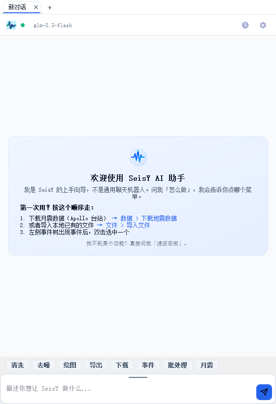

AI 助手

入口：工具 › AI 助手，或工具栏上的 AI Assistant 按钮。
面板停靠在窗口右侧，可以拖到左侧或拖出来变成独立窗口。默认隐藏， 关闭后用同一入口重新打开。
它是上手向导，不是通用聊天机器人
面板首屏的欢迎卡片写得很明白：问「怎么做」，它告诉你去点哪个菜单。
它的价值在「知道 117 个菜单项分别在哪」这件事上——这正是新手最费时间的地方。
面板结构
| 区域 | 内容 |
|---|---|
| 顶部标签栏 | 每个会话一个标签，+ 新建，× 关闭 |
| 模型行 | 当前模型名、连接状态点、历史记录按钮、设置齿轮 |
| 会话区 | 对话内容，首屏是欢迎卡片 |
| 快捷按钮行 | 清洗、去噪、绘图、导出、下载、事件、批处理、月震 |
| 输入框 | 描述你想让 SeisY 做什么 |
底部那一行按钮不是命令，是快捷提问：点一下等于把对应的话题填进输入框， 省去打字。例如点「下载」会把「怎么下载月震数据」类的问法直接送出去。
会话管理
- 标签栏
+：新建一个独立会话，上下文互不干扰 - 标签上的
×：关闭该会话 - 模型行右侧的时钟图标：历史记录，可以翻回以前的会话继续
长任务分开建会话
同一个会话里连续问十几轮之后，模型对早期的约束记得越来越模糊。做不同主题的
任务时新建一个会话，比在一个长会话里继续问更可靠。
模型配置
点模型行右侧的齿轮打开 AI 配置。可配置项：
| 项 | 说明 |
|---|---|
| 服务商 / Provider | 提供模型的服务方 |
| base_url | 接口地址 |
| api_key | 密钥，只存在本机注册表里 |
| model | 模型名，例如 glm-5.3-flash |
| temperature | 随机性，0.2 偏稳定 |
| timeout | 单次请求超时（秒） |
| max_tokens | 单次回复的最大长度 |
| system_prompt | 系统提示词，决定它的角色与回答风格 |
| use_agent_loop | 是否允许它连续多步调用工具 |
| agent_max_steps | 最多几步，默认 6 |
| enable_reflection | 是否让它在给出答案前自检一遍 |
密钥保存在注册表里
Windows 上这些设置写在
HKCU\Software\SeisY\SeisY\ai。
共用电脑时注意这一点；换机器不会自动同步。
能做什么、不能做什么
擅长：告诉你某个功能在哪个菜单、某个参数是什么意思、处理顺序该怎么排、 报错信息对应什么问题。
不要指望：它看不到你的数据。它不知道你加载了哪条记录、波形长什么样、 频谱峰在哪。任何涉及具体数值的判断都要你自己在面板里核对。
AI 给出的参数值必须自己验证
它给出的滤波通带、FFT 点数这类建议是基于通用经验的起点，不是针对你这条记录
算出来的。用之前先看一眼数据全览里的采样率和奈奎斯特频率。
常见问题
点发送没反应，状态点是灰色？
密钥或接口地址不对。打开齿轮检查 api_key 和 base_url，改完点保存，
状态点变绿才能用。
回答到一半停了？
max_tokens 太小。调到 4096 以上再试。
它说要调用某个功能，但我这里没有这个菜单？ 版本不同。菜单项以你本机「帮助 › 关于」里的版本号为准，附录里的菜单索引也是 从你本机运行时读出来的，可以直接对照。